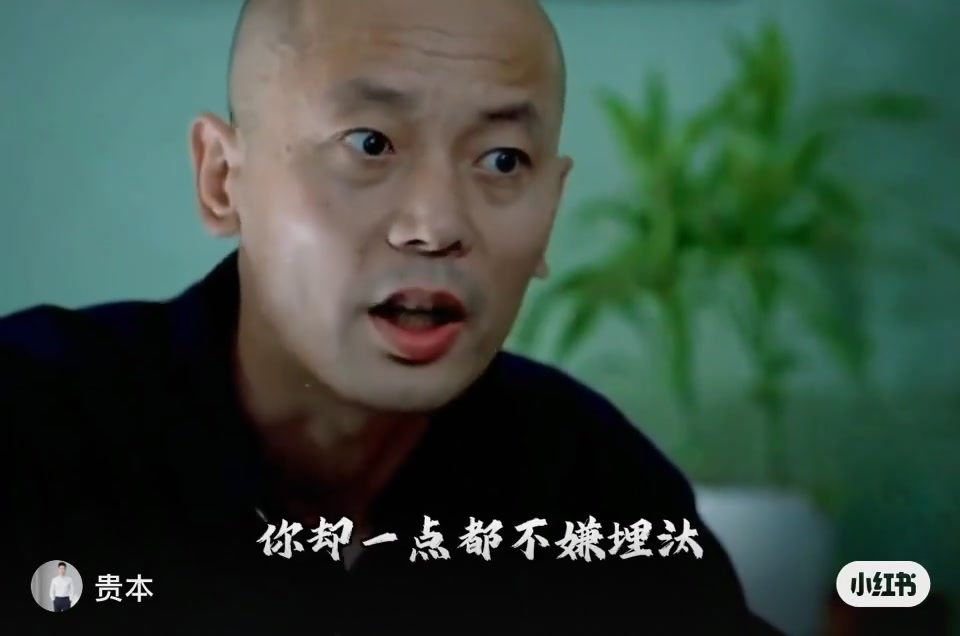
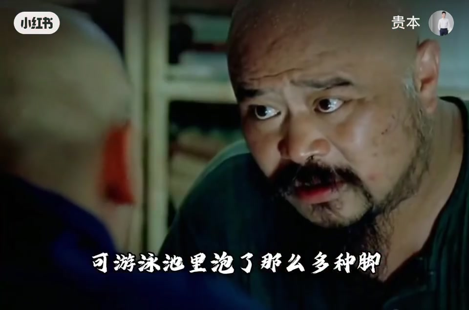
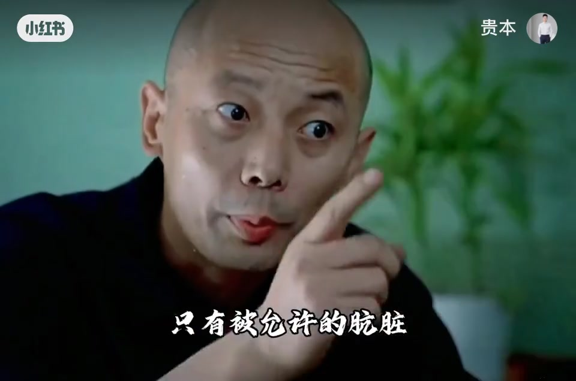

内容要点
知识结构
[00:00→00:10]
命题抛出
干净不是绝对状态，而是被规则与习惯允许的边界。
[00:10→00:20]
对照句
字幕「你却一点都不嫌埋汰」：指出双重标准。
[00:20→00:27]
收束
把「脏」从道德绝对性里拆出来，变成可讨论的允许范围。
总结
洁与脏常常是被允许与否的问题，不是物理上的绝对零污染。
无可用口播转录；内容依标题与字幕重建。
图文实录
金句近景
00:00 – 00:14
讲者秃顶近景、表情夸张，字幕出现「你却一点都不嫌埋汰」——用口语「埋汰」把洁癖话术拉回生活场景。

[00:04]字幕「你却一点都不嫌埋汰」：对照洁癖双标
Subtitle calling out double standards about what counts as “dirty”
命题展开
00:14 – 00:27
整段围绕标题命题：绝对干净不存在，存在的是社会/关系里「被允许的肮脏」。短片不给操作清单，只给认知翻转。

[00:13]近景强调：干净是被允许的边界
Close-up emphasis: cleanliness is a permitted boundary, not absolute purity

[00:22]收束：把脏从道德绝对性中拆出
Close: separate “dirt” from absolute moral judgment